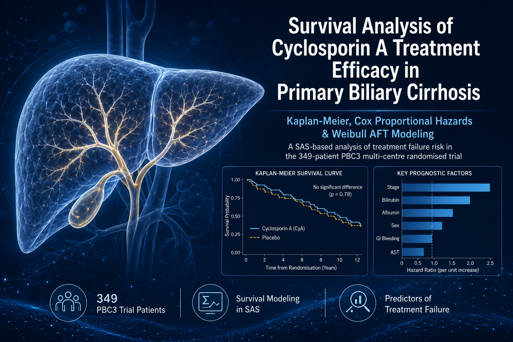
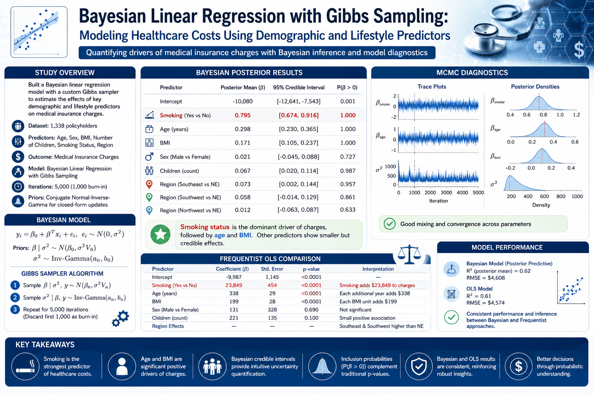
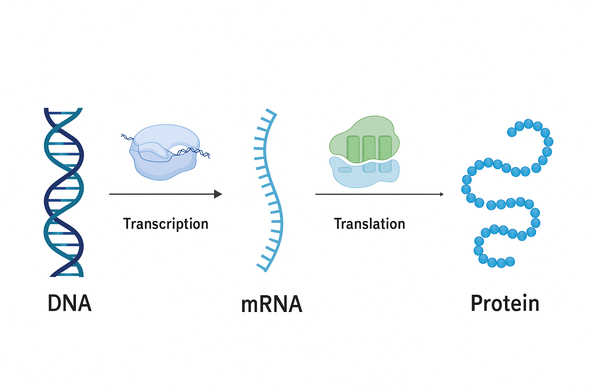
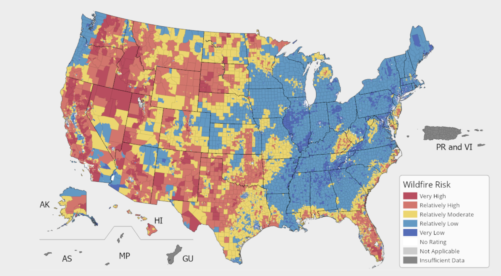

Hello 👋, I'm
Cyril Nana Boakye Benson
Data Scientist & Biostatistician


Hello 👋, I'm
Data Scientist & Biostatistician
Get To Know More
I'm Cyril Benson, a Data Scientist and Biostatistician with an M.S. in Statistics from Oregon State University and a B.S. in Actuarial Science from KNUST. I have experience architecting end-to-end ML systems, scalable data pipelines, and advanced statistical frameworks across healthcare, insurance, and research domains. Expert in designing and deploying production-grade predictive models using Python, R, SQL, and GCP, with deep fluency in XGBoost, LightGBM, survival analysis, NLP (BERT), and Bayesian inference. Proven ability to deliver executive-ready insights through Power BI and Tableau, lead cross-functional analytics initiatives, and translate complex business problems into high-impact, data-driven solutions. Recognized for rigorous statistical methodology, MLOps best practices, and consistent delivery of measurable outcomes across complex, regulated environments.
Explore My
Browse My Recent
A production-grade clinical analytics framework applied to 54,966 synthetic patient records across six rigorous phases. Phase 1 covers systematic data provenance and feature engineering, including detection and correction of 534 duplicate records and 108 erroneous billing entries, with engineered Length of Stay as a time-to-event variable. Phase 2 delivers multi-dimensional EDA across demographics, clinical patterns, financial metrics, and operational performance using interactive Plotly visualisations. Phase 3 applies chi-square tests of independence, Kruskal-Wallis non-parametric ANOVA, and odds ratio estimation with 95% confidence intervals to interrogate clinical associations. Phase 4 fits Kaplan-Meier survival functions and a multivariate Cox Proportional Hazards model (concordance = 0.506) to model time-to-discharge. Phase 5 trains and evaluates Logistic Regression, XGBoost, and Random Forest classifiers for tri-class test result prediction (best: Random Forest, Macro F1 = 0.43, ROC-AUC = 0.629), with SHAP explainability for feature attribution. Phase 6 applies K-Means clustering and UMAP dimensionality reduction for unsupervised patient stratification.
This project applies supervised classification methods to predict disease progression in Idiopathic Pulmonary Fibrosis (IPF) using clinical and high-dimensional proteomic data from 60 patients. The binary outcome is modeled under two regimes: a low-dimensional setting with 14 selected covariates and a high-dimensional setting with 1,129 features. In the low-dimensional phase, logistic regression, decision trees, and random forests are compared. Random forests outperform others, achieving 83.3% test accuracy and AUC of 0.984. In the high-dimensional phase, LASSO logistic regression and random forests are applied. LASSO performs poorly (AUC ≈ 0.51), while random forests yield better results (accuracy = 61.1%, AUC = 0.57), though performance degrades due to limited sample size and weak signal. Models are evaluated using cross-validation and standard classification metrics.

This study evaluates survival outcomes in Primary Biliary Cirrhosis (PBC) patients using the PBC3 dataset to assess the efficacy of Cyclosporin A (CyA) treatment. Kaplan-Meier analysis, conducted in SAS, revealed no significant difference in survival between treatment and placebo groups, but disease stage, sex, and bilirubin levels were critical predictors. The Cox Proportional Hazards model and Weibull Accelerated Failure Time (AFT) model, also implemented in SAS, confirmed that advanced disease stages, higher bilirubin, and lower albumin levels significantly reduced survival time, while treatment with CyA showed limited impact. Diagnostic checks validated the model assumptions, highlighting the importance of robust statistical methods in SAS to guide clinical decision-making for PBC management.

Conducted in-depth exploratory data analysis on Fine Needle Aspiration (FNA) images, this project applied machine learning techniques to enhance breast cancer diagnostics. Five classification models were evaluated—Logistic Regression, K-Nearest Neighbors (KNN), Random Forests, Support Vector Machines (SVM) with RBF kernel, and Gradient Boosting. The SVM with RBF kernel achieved the highest accuracy of 98.25%, demonstrating superior performance. These findings highlight the potential of machine learning to improve diagnostic accuracy and support healthcare professionals in making precise, timely diagnoses.

Developed an R Shiny app to conduct a detailed analysis of PM2.5 levels across major cities in the USA and India. Utilized advanced data manipulation and visualization techniques to enable users to explore air quality trends, generate summary statistics, and perform targeted analyses by selecting specific countries, cities, and date ranges. The app features dynamic plots with contextual annotations for significant events, providing critical insights into air quality fluctuations and their correlations with major occurrences. This tool supports data-driven environmental assessments and informs public health decisions.
This project analyzes Titanic survival outcomes using IRLS logistic regression and Monte Carlo simulations, revealing that gender, age, and class strongly influenced survival. Women, younger passengers, and higher-class individuals had better survival chances, while increased lifeboat capacity offered modest improvements. Variance reduction techniques, especially antithetic variates, enhanced the precision of the simulations. The study demonstrates the power of statistical methods to uncover insights and inform crisis management strategies.

This project investigates the distribution of Female Sex Workers (FSWs) in sub-Saharan Africa using a negative binomial mixed-effects model, incorporating environmental and sociological variables. Key findings reveal that population density, urbanization levels (built index), temperature, crime rates, and insect net usage significantly influence FSW counts across regions. Random effects for country, region, and year accounted for unmeasured spatial and temporal variability, highlighting the importance of contextual factors. These insights provide critical guidance for targeted HIV prevention strategies by identifying key determinants and emphasizing the need for integrated public health interventions.

This project implements Bayesian linear regression using Gibbs sampling to model U.S. medical insurance charges as a function of standardized covariates including age, sex, BMI, number of children, smoking status, and geographic region. Conjugate priors are specified: a multivariate normal prior on the regression coefficients and an inverse-gamma prior on the error variance. The conjugate structure yields closed-form full conditional distributions, enabling efficient Gibbs sampling without approximation. Posterior inference identifies smoking, age, and BMI as dominant predictors with high posterior inclusion probability, while sex and several regional effects are negligible. Diagnostics confirm convergence and stability of the Markov chain. Frequentist linear regression estimates are presented for baseline comparison and show consistent directionality, though the Bayesian framework offers more comprehensive uncertainty quantification.

This project develops a binary classification model to predict maize gene pollen specificity using only genomic sequence features, bypassing the cost and complexity of transcriptomic or proteomic profiling. The dataset includes 12,725 genes and 2,626 sequence-derived features sourced from MaizeGDB. After initial filtering to remove low-variance and highly correlated features, dimensionality reduction techniques such as PCA and t-SNE were applied but revealed limited class separation. A logistic regression model with LASSO regularization was trained to enforce sparsity and identify informative predictors. The model achieved an AUROC of 0.7437 on the held-out test set, indicating moderate predictive performance, with high specificity and lower sensitivity. Analysis of feature weights highlighted biologically interpretable sequence motifs, including the overrepresentation of certain 3-mers potentially linked to cis-regulatory elements.

This project explores spatial statistical methods to analyze the distribution and intensity of wildfire damage in California using a subset of 10,000 stratified wildfire incidents. The data includes geographic coordinates and ordinal damage levels, which were converted to numeric scores to facilitate modeling. Global and local spatial autocorrelation were detected using Moran’s I and Geary’s C, both indicating significant clustering of similar damage levels. Spatial autoregressive (SAR) and conditional autoregressive (CAR) models were fitted, showing strong localized spatial dependence with little sensitivity to neighborhood cutoff.
This project evaluates the Pew Research Center's 2022 global threats survey, focusing on climate change perceptions across 19 advanced economies and exploring the optimal sample size needed to achieve a small margin of error. Using data from the American Trends Panel (ATP) for the U.S., a margin of error formula was applied to determine the relationship between sample size and precision, revealing that reducing the margin of error significantly requires a substantial increase in sample size. Key limitations, such as sampling bias, differential incentives, and non-response bias, were highlighted alongside the strengths of stratification and rigorous survey methods.
Get in Touch